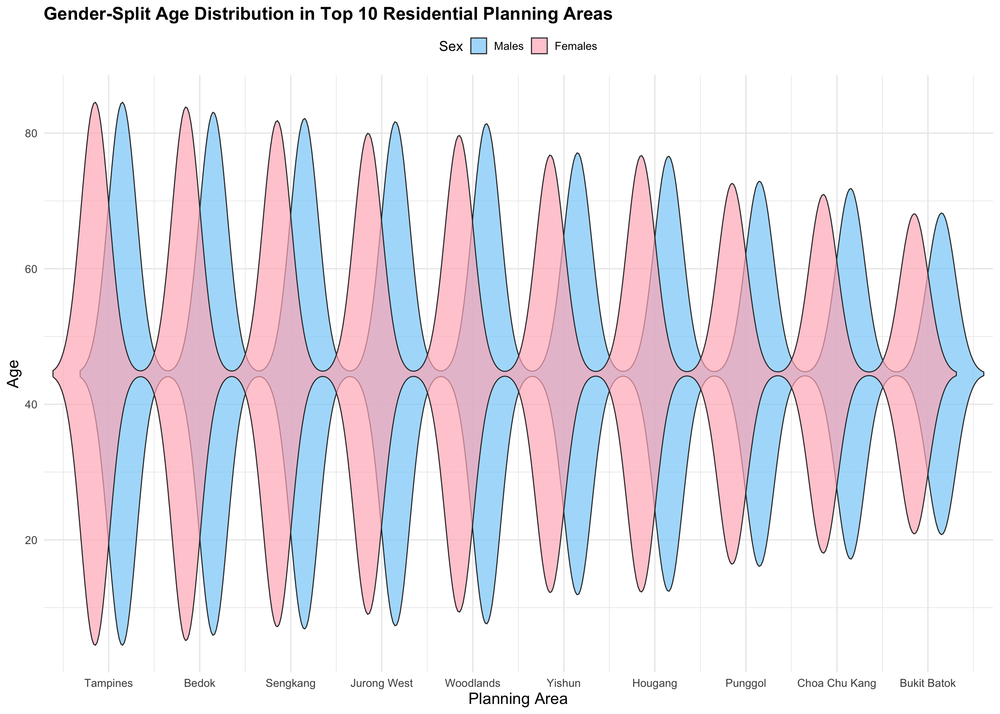
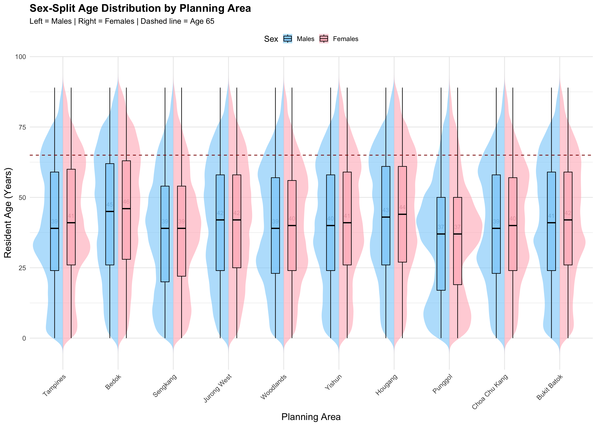
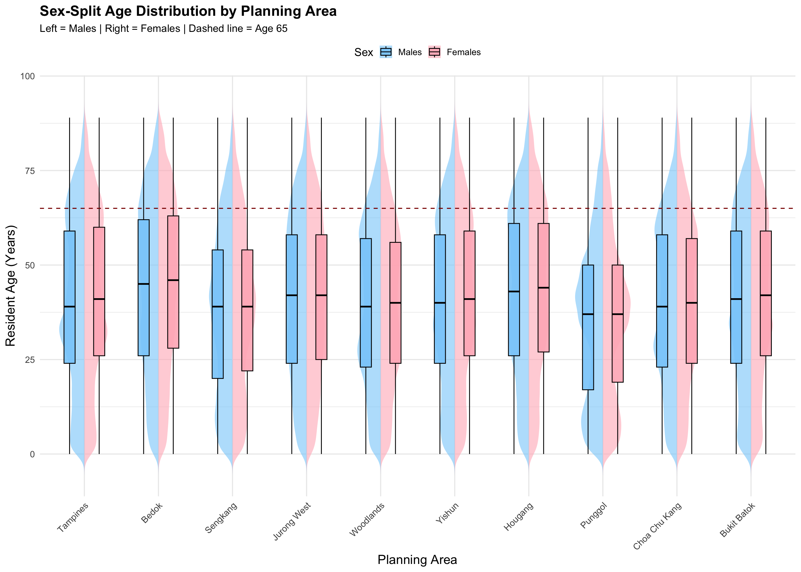

pacman::p_load(scales, ggrepel, patchwork,
ggthemes, hrbrthemes,tidyverse,
tidytext,treemapify, dplyr, gghalves) test2
| name | purpose |
|---|---|
scales |
Nicely formats axis ticks and legends. |
ggrepel |
Adds non‑overlapping text labels to ggplots. |
patchwork |
Combines multiple ggplots into a single figure. |
ggthemes |
Supplies predefined aesthetic themes. |
hrbrthemes |
Extends ggthemes with modern, typographically friendly themes and font support. |
tidyverse |
Meta‑package that loads ggplot2, dplyr, tidyr, readr, stringr, forcats, etc. — the backbone for data import, transformation, and visualisation. |
tidytext |
Tokenises and analyses text. |
treemapify |
Creates ggplot‑compatible treemaps. |
dplyr |
Provides a fast, consistent, and intuitive set of functions for data manipulation, including filtering, selecting, grouping, summarising, and joining data frames. |
The code imports the dataset respopagesex2024.csv and load the CSV file into a dataframe named population_data.
After import, the mutate() function is applied to convert the Age column from character to numeric format.
population_data <- read_csv("data/respopagesex2024.csv") %>%
mutate(Age = as.numeric(Age))Rows: 60424 Columns: 6
── Column specification ────────────────────────────────────────────────────────
Delimiter: ","
chr (4): PA, SZ, Age, Sex
dbl (2): Pop, Time
ℹ Use `spec()` to retrieve the full column specification for this data.
ℹ Specify the column types or set `show_col_types = FALSE` to quiet this message.Warning: There was 1 warning in `mutate()`.
ℹ In argument: `Age = as.numeric(Age)`.
Caused by warning:
! NAs introduced by coercion glimpse() function provides a concise overview of the dataset’s structure, displaying column names, data types, and sample values.
glimpse(population_data)Rows: 60,424
Columns: 6
$ PA <chr> "Ang Mo Kio", "Ang Mo Kio", "Ang Mo Kio", "Ang Mo Kio", "Ang Mo K…
$ SZ <chr> "Ang Mo Kio Town Centre", "Ang Mo Kio Town Centre", "Ang Mo Kio T…
$ Age <dbl> 0, 0, 1, 1, 2, 2, 3, 3, 4, 4, 5, 5, 6, 6, 7, 7, 8, 8, 9, 9, 10, 1…
$ Sex <chr> "Males", "Females", "Males", "Females", "Males", "Females", "Male…
$ Pop <dbl> 10, 10, 10, 10, 10, 10, 10, 10, 30, 10, 20, 10, 20, 30, 30, 10, 3…
$ Time <dbl> 2024, 2024, 2024, 2024, 2024, 2024, 2024, 2024, 2024, 2024, 2024,…Original visualization
The original visualization is from my classmate Tai Qiuyan. Please click on this link to view her original visualization report or obtain more information.
glimpse(population_data)Rows: 60,424
Columns: 6
$ PA <chr> "Ang Mo Kio", "Ang Mo Kio", "Ang Mo Kio", "Ang Mo Kio", "Ang Mo K…
$ SZ <chr> "Ang Mo Kio Town Centre", "Ang Mo Kio Town Centre", "Ang Mo Kio T…
$ Age <dbl> 0, 0, 1, 1, 2, 2, 3, 3, 4, 4, 5, 5, 6, 6, 7, 7, 8, 8, 9, 9, 10, 1…
$ Sex <chr> "Males", "Females", "Males", "Females", "Males", "Females", "Male…
$ Pop <dbl> 10, 10, 10, 10, 10, 10, 10, 10, 30, 10, 20, 10, 20, 30, 30, 10, 3…
$ Time <dbl> 2024, 2024, 2024, 2024, 2024, 2024, 2024, 2024, 2024, 2024, 2024,…violin_data <- population_data %>%
mutate(Age = as.numeric(Age)) %>%
filter(!is.na(Age), !is.na(PA)) %>%
group_by(PA, Age) %>%
summarise(Pop = sum(Pop), .groups = "drop") %>%
uncount(weights = Pop)
top10_PAs <- population_data %>%
group_by(PA) %>%
summarise(Total_Pop = sum(Pop), .groups = "drop") %>%
arrange(desc(Total_Pop)) %>%
slice_head(n = 10) %>%
pull(PA)
violin_filtered <- violin_data %>%
filter(PA %in% top10_PAs) %>%
mutate(PA = factor(PA, levels = top10_PAs))
violin_gender_split <- population_data %>%
filter(PA %in% top10_PAs) %>%
mutate(Age = as.numeric(Age)) %>%
filter(!is.na(Sex), !is.na(Age)) %>%
group_by(PA, Sex, Age) %>%
summarise(Pop = sum(Pop), .groups = "drop") %>%
uncount(weights = Pop) %>%
mutate(
Sex = factor(Sex, levels = c("Females", "Males")),
PA = factor(PA, levels = top10_PAs)
)library(ggplot2)
ggplot(violin_gender_split, aes(x = Age, y = PA, fill = Sex)) +
# 男性：右侧偏移
geom_violin(
data = subset(violin_gender_split, Sex == "Males"),
aes(x = Age, y = as.numeric(PA) + 0.15),
scale = "area", trim = FALSE, width = 1.5, alpha = 0.7
) +
# 女性：左侧偏移
geom_violin(
data = subset(violin_gender_split, Sex == "Females"),
aes(x = Age, y = as.numeric(PA) - 0.15),
scale = "area", trim = FALSE, width = 1.5, alpha = 0.7
) +
# 漫画风色彩
scale_fill_manual(values = c("Females" = "#FFB6C1", "Males" = "#87CEFA")) +
# 手动 y 轴映射为 factor 顺序
scale_y_continuous(
breaks = 1:length(top10_PAs),
labels = top10_PAs,
expand = expansion(mult = c(0.01, 0.01))
) +
coord_flip() +
labs(
title = "Gender-Split Age Distribution in Top 10 Residential Planning Areas",
x = "Age",
y = "Planning Area",
fill = "Sex"
) +
theme_minimal(base_size = 14) +
theme(
axis.title = element_text(size = 16),
plot.title = element_text(face = "bold", size = 18),
legend.position = "top"
)
# 数据处理（和之前一样）
violin_gender_split <- population_data %>%
filter(PA %in% top10_PAs) %>%
mutate(Age = as.numeric(Age)) %>%
filter(!is.na(Sex), !is.na(Age)) %>%
group_by(PA, Sex, Age) %>%
summarise(Pop = sum(Pop), .groups = "drop") %>%
uncount(weights = Pop) %>%
mutate(
Sex = factor(Sex, levels = c("Males", "Females")),
PA = factor(PA, levels = top10_PAs)
)
# 设置偏移量
offset <- 0.15
# 绘图：左右性别 + 箱线图
ggplot(violin_gender_split, aes(x = PA, y = Age, fill = Sex)) +
stat_summary(
data = subset(violin_gender_split, Sex == "Males"),
fun = median,
geom = "text",
aes(label = round(..y.., 0)),
position = position_nudge(x = -offset),
vjust = -1.2,
size = 3.5,
color = "black"
) +
stat_summary(
data = subset(violin_gender_split, Sex == "Females"),
fun = median,
geom = "text",
aes(label = round(..y.., 0)),
position = position_nudge(x = offset),
vjust = -1.2,
size = 3.5,
color = "black"
)+
# 小提琴图左（男性）
geom_half_violin(
data = subset(violin_gender_split, Sex == "Males"),
side = "l", alpha = 0.6, trim = FALSE, color = NA,width = 1.2
) +
# 小提琴图右（女性）
geom_half_violin(
data = subset(violin_gender_split, Sex == "Females"),
side = "r", alpha = 0.6, trim = FALSE, color = NA,width = 1.2
) +
# 箱线图左（男性）
geom_boxplot(
data = subset(violin_gender_split, Sex == "Males"),
width = 0.15, outlier.shape = NA, alpha = 0.7,
position = position_nudge(x = -offset),
color = "black"
) +
# 箱线图右（女性）
geom_boxplot(
data = subset(violin_gender_split, Sex == "Females"),
width = 0.15, outlier.shape = NA, alpha = 0.7,
position = position_nudge(x = offset),
color = "black"
) +
# 漫画风填色
scale_fill_manual(values = c("Males" = "#87CEFA", "Females" = "#FFB6C1")) +
# 添加参考线
geom_hline(yintercept = 65, linetype = "dashed", color = "darkred", linewidth = 0.6) +
labs(
title = "Sex-Split Age Distribution by Planning Area",
subtitle = "Left = Males | Right = Females | Dashed line = Age 65",
x = "Planning Area",
y = "Resident Age (Years)",
fill = "Sex"
) +
theme_minimal(base_size = 14) +
theme(
axis.text.x = element_text(angle = 45, hjust = 1),
axis.title = element_text(size = 16),
plot.title = element_text(size = 18, face = "bold"),
plot.subtitle = element_text(size = 13),
legend.position = "top"
)Warning: The dot-dot notation (`..y..`) was deprecated in ggplot2 3.4.0.
ℹ Please use `after_stat(y)` instead.Warning: `position_dodge()` requires non-overlapping x intervals.
`position_dodge()` requires non-overlapping x intervals.
offset <- 0.2 # 将左右偏移加大一点，避免遮住
ggplot(violin_gender_split, aes(x = PA, y = Age, fill = Sex)) +
# 小提琴图先画在底层
geom_half_violin(
data = subset(violin_gender_split, Sex == "Males"),
side = "l", alpha = 0.6, trim = FALSE, color = NA
) +
geom_half_violin(
data = subset(violin_gender_split, Sex == "Females"),
side = "r", alpha = 0.6, trim = FALSE, color = NA
) +
# 箱线图在两侧偏移（不遮住中轴小提琴）
geom_boxplot(
data = subset(violin_gender_split, Sex == "Males"),
width = 0.15, outlier.shape = NA, alpha = 0.9,
position = position_nudge(x = -offset),
color = "black"
) +
geom_boxplot(
data = subset(violin_gender_split, Sex == "Females"),
width = 0.15, outlier.shape = NA, alpha = 0.9,
position = position_nudge(x = offset),
color = "black"
) +
# 颜色映射
scale_fill_manual(values = c("Males" = "#87CEFA", "Females" = "#FFB6C1")) +
# 添加参考线
geom_hline(yintercept = 65, linetype = "dashed", color = "darkred", linewidth = 0.6) +
labs(
title = "Sex-Split Age Distribution by Planning Area",
subtitle = "Left = Males | Right = Females | Dashed line = Age 65",
x = "Planning Area",
y = "Resident Age (Years)",
fill = "Sex"
) +
theme_minimal(base_size = 14) +
theme(
axis.text.x = element_text(angle = 45, hjust = 1),
axis.title = element_text(size = 16),
plot.title = element_text(size = 18, face = "bold"),
plot.subtitle = element_text(size = 13),
legend.position = "top"
)